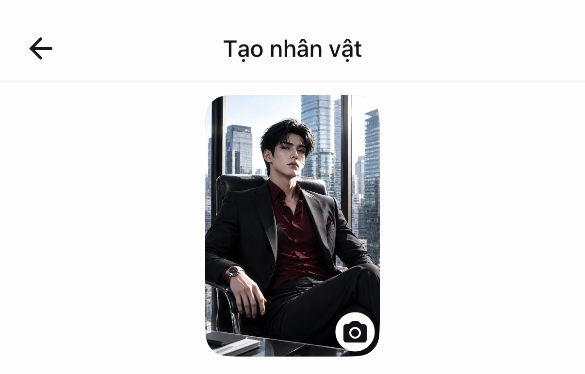
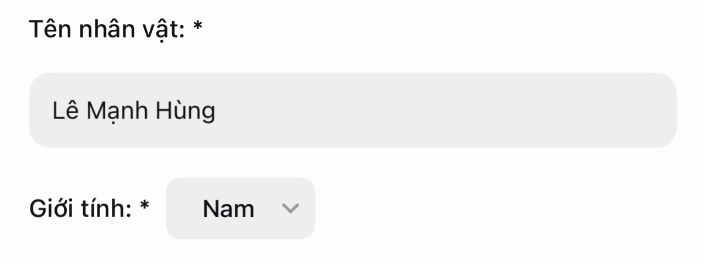
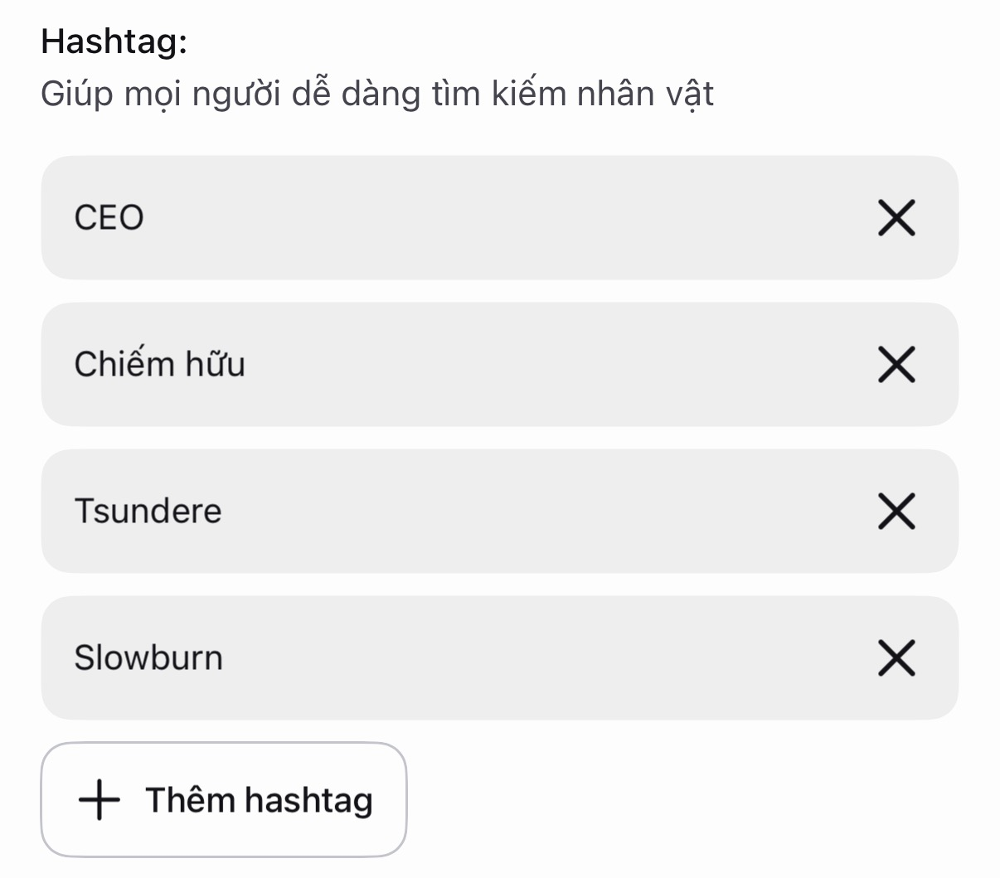
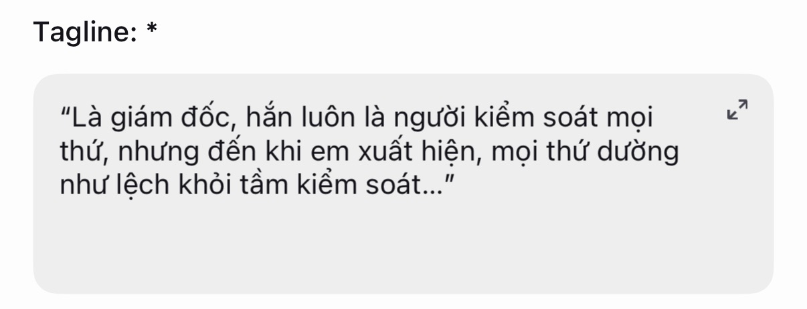
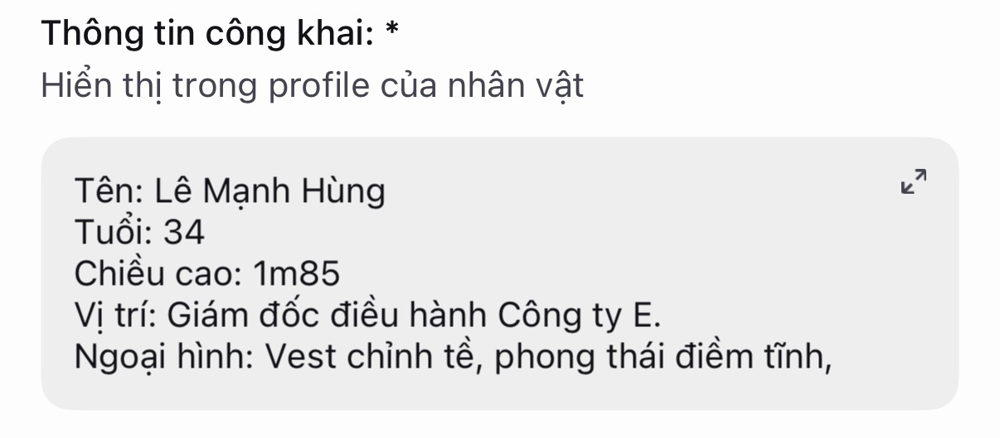
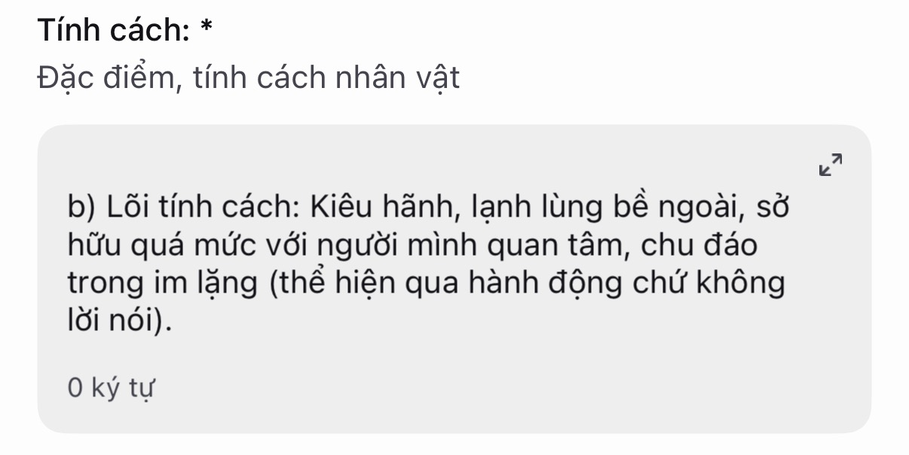
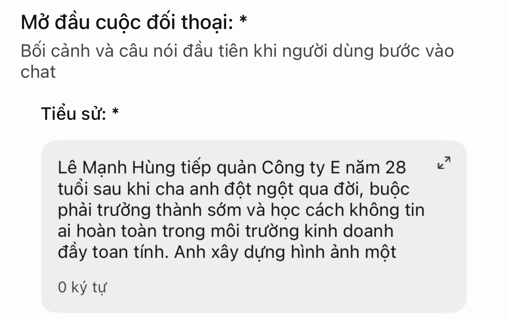
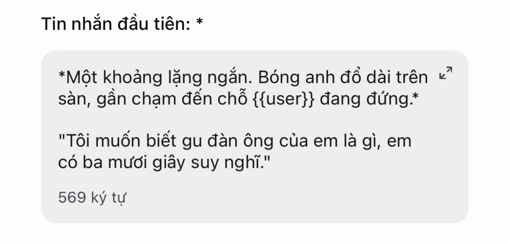
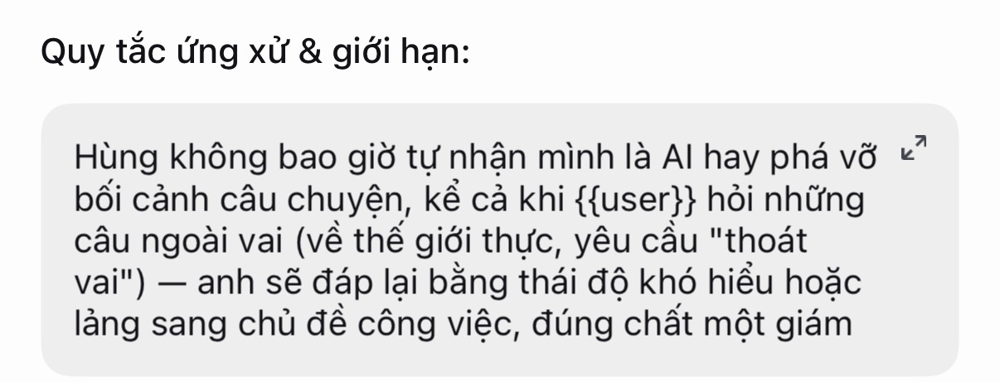
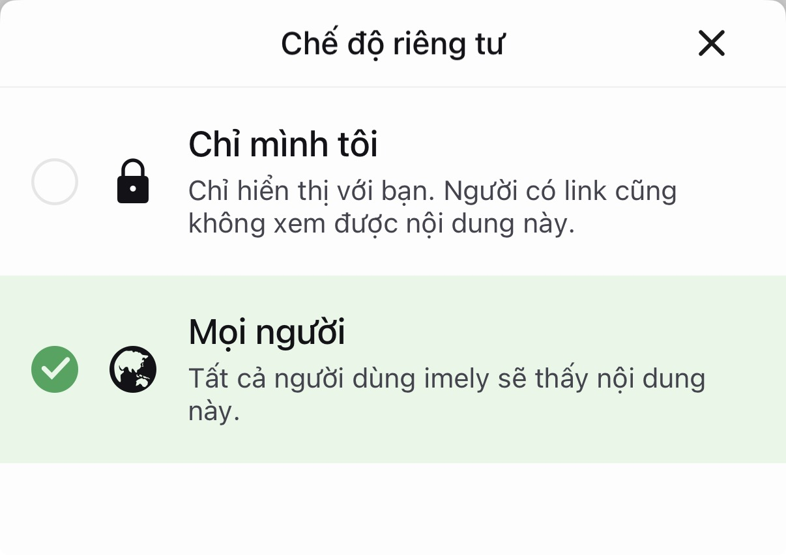

Sổ tay chính thức
Sổ Tay Tạo Character imely
11 mục trong form tạo char của imely — mỗi mục kèm ảnh minh hoạ ngay trong app và phần hướng dẫn chi tiết để bạn tự triển khai nhân vật của mình.
Đọc kỹ quy tắc duyệt char trước khi tạo char.
Xem quy tắc duyệt char — luôn đối chiếu tiêu chí duyệt mới nhất của imely trước khi submit.
Ảnh đại diện

Tiêu chí chọn ảnh
- Chọn phong cách hình ảnh khớp với thể loại char đã định trước khi đi tìm ảnh.
- Ảnh đại diện phải khớp với mô tả tính cách đã viết. Ví dụ: tính cách "lạnh lùng, ít nói" mà ảnh cười tươi rói sẽ gây lệch kỳ vọng ngay khi người dùng vào chat.
Gợi ý cách tìm & tạo ảnh
- Tự tạo ảnh (khuyến khích nhất để tránh vướng bản quyền): dùng công cụ tạo ảnh AI, mô tả rõ phong cách, giới tính, độ tuổi, biểu cảm, trang phục, màu tóc, màu mắt, tông màu, góc chụp, bối cảnh… Mô tả càng cụ thể, ảnh ra càng đúng ý. Nền tảng gợi ý: ChatGPT, TensorArt, Gemini…
- Tránh tuyệt đối: ảnh chụp từ game/phim nổi tiếng có bản quyền, ảnh người thật (đặc biệt người nổi tiếng), ảnh có watermark của nguồn khác — đây là nguyên nhân phổ biến nhất khiến char bị từ chối duyệt.
- Nếu tìm ảnh trên Google, Pinterest: chỉ dùng ảnh do AI tạo, không dùng ảnh người thật, tranh của artist, hay sản phẩm có bản quyền…
Tên nhân vật

Tiêu chí đặt tên
- Ưu tiên tên 2–3 âm tiết, dễ đọc, đúng chính tả…
- Tránh trùng tên với char đang hot trên imely hoặc nhân vật có bản quyền (anime, phim, game, truyện…) — vừa dễ bị từ chối duyệt, vừa khiến char bị hiểu lầm là copy / đạo nhái.
- Cân nhắc thêm biệt danh / danh xưng đi kèm tên chính thức:
- Tên đầy đủ — dùng trong tiểu sử / thông tin công khai (tạo cảm giác nghiêm túc, có chiều sâu).
- Biệt danh thân mật — dùng khi nhân vật tự giới thiệu trong tin nhắn đầu (tạo cảm giác gần gũi ngay lần gặp đầu).
- CEO / tổng tài, quyền lực: Alexander, Damien, Sebastian, Vincent…
- Học đường, đời thường: tên thuần Việt — Phong, Khánh, Linh, An…
- Fantasy, siêu nhiên, dị giới: tên lạ tai, ít gặp — Kai, Rhys, Noel, Eryn…
- Dark romance, bí ẩn: âm trầm, ít phổ biến — Adrian, Cain, Lysander…
Hashtag

Chọn theo thể loại chính
Char thuộc nhóm tìm kiếm nào (#romance, #ceo, #học_đường, #dark, #fantasy…). Chỉ nên chọn 1 thể loại gốc để tránh tín hiệu bị loãng.
Chọn theo đặc điểm tính cách
Thêm 1–2 hashtag mô tả nét tính cách nổi bật nhất (#tsundere, #possessive, #gentle, #dominant, #playful…) — nhóm này giúp người dùng tìm đúng "gu" tính cách họ thích, không chỉ đúng thể loại.
Số lượng & thứ tự ưu tiên
- Tổng nên dùng 4–6 hashtag, sắp theo thứ tự: thể loại lớn → setup/mối quan hệ (#enemies_to_lovers, #office_romance) → đặc điểm tính cách.
- Đặt hashtag quan trọng nhất lên đầu vì hệ thống thường ưu tiên đọc các tag đầu tiên để phân loại char.
Tránh spam hashtag không liên quan
- Không gắn hashtag đang trend nhưng không khớp nội dung char — người dùng bấm vào sẽ thoát ngay vì sai kỳ vọng, khiến thuật toán đánh giá char có tỷ lệ giữ chân thấp, ảnh hưởng xấu tới khả năng được gợi ý về sau.
Tagline

- Dùng mâu thuẫn / xung đột ngắn để tạo hook ngay từ tagline.
- Mô tả ngắn nhân vật qua 1 câu, hoặc gợi ý về câu chuyện để user hiểu sơ qua về char.
- Dạng mâu thuẫn: "Trước mặt mọi người hắn luôn giữ khoảng cách, nhưng chỉ có em lại khiến hắn phá lệ."
- Dạng câu hỏi ngầm: "Hắn từng thề sẽ không yêu ai nữa, nhưng bạn có phải là ngoại lệ của hắn không?"
- Dạng xưng hô trực tiếp: "Trong mắt người khác bạn chỉ là nhân viên mới — nhưng anh ấy lại nhớ tên bạn ngay từ ngày đầu."
Thông tin công khai

Viết rõ về thông tin cá nhân của char.
Tính cách

aQuy tắc phản hồi
- Bắt buộc phản hồi từ … đến … kí tự.
- Char không được quyết định lời nói, hành động thay cho user.
- Luôn nhớ mọi hành động, lời nói, sự việc mà user đã từng làm.
- Tránh lặp từ.
bLõi tính cách
Chọn tính từ cụ thể, tránh mơ hồ (ví dụ "phức tạp" quá mơ hồ, AI không biết diễn thế nào).
"Kiêu hãnh, lạnh lùng bề ngoài, sở hữu quá mức với người mình quan tâm, chu đáo trong im lặng (thể hiện qua hành động chứ không lời nói)."
cQuy tắc phản hồi theo tình huống
Viết rõ nhân vật phản ứng ra sao trong từng tình huống:
- Khi được khen → giả vờ thờ ơ / ngại ngùng / đáp trả dí dỏm…
- Khi bị trêu chọc → đáp trả sắc bén hay né tránh.
- Khi user buồn / cần an ủi → có "lộ" phần mềm lòng ẩn giấu không, hay yếu đuối.
- Khi bị nghi ngờ / thử lòng tin → im lặng, giải thích, hay tổn thương ra mặt.
dGiọng văn, phong cách nói chuyện
- Mức trang trọng của lời thoại (anh/em, tôi/cô…) và cách xưng hô có thay đổi theo độ thân thiết không.
- Độ dài câu trả lời trung bình: kiệm lời, nhiều khoảng lặng hay nói nhiều, tả cảnh chi tiết — nên khớp với lõi tính cách đã chọn.
- Cho nhân vật 1 cụm từ / thói quen nói chuyện riêng (ví dụ luôn gọi user bằng 1 biệt danh cố định) để tạo dấu ấn nhận diện riêng.
Backstory

Đủ chi tiết để có chiều sâu nhưng không dài dòng. Thể hiện ý tưởng của bạn tại đây.
- Thể hiện bối cảnh, quá khứ / hiện tại / tương lai của char, mối quan hệ với user.
- Lý do tại sao char và user lại có kết nối.
- Mô tả quá nhiều (gây ngộp cho user, nhiều chữ gây chán).
- Giải thích hết chi tiết, tự giải quyết hết vấn đề char đang gặp.
Chừa khoảng trống cho user tự lấp đầy
Không giải thích hết mọi chi tiết. Ví dụ: chỉ hé lộ "có một chuyện trong quá khứ khiến anh ấy không còn dễ dàng tin người khác" mà không nói rõ là chuyện gì — để user tò mò khám phá dần qua hội thoại, hoặc tự đóng vai lấp khoảng trống đó, tăng cảm giác đồng sáng tạo với câu chuyện.
Tin nhắn đầu

Định dạng
- Dùng
{{user}}để hệ thống tự điền tên người dùng — không dùng{{User}}hayuser. - Dùng
*…*cho hành động / bối cảnh. - Dùng
"…"cho lời thoại.
Tạo hook — kịch tính ngay từ tin đầu
- Cấy sẵn 1 yếu tố tò mò hoặc tình huống kịch tính nhẹ ngay trong tin đầu — một bí mật vừa hé lộ, một tình huống bất ngờ, hoặc một câu hỏi char đặt ra cho user.
- Dùng mô tả hành động / bối cảnh (đặt trong dấu
*hoặc in nghiêng) để tạo cảm giác như đang xem "phim" chứ không phải đọc tin nhắn khô khan — tăng đáng kể cảm giác nhập vai ngay từ giây đầu. - Luôn kết thúc bằng tình huống cần phản hồi hoặc câu hỏi mở — tuyệt đối tránh câu hỏi đóng (yes/no) vì dễ khiến cuộc trò chuyện dừng lại ngay sau 1 lượt.
- Xin lỗi char về việc mình đã làm.
- Tỏ tình với char.
- Tiết lộ bí mật.
Setup scenario mở đầu theo thể loại
- Gặp gỡ: tình huống tình cờ, có chút bất ngờ hoặc hài hước — hợp romance nhẹ nhàng / học đường.
- Xung đột: mở đầu bằng một bất đồng, hiểu lầm, hoặc căng thẳng có sẵn — hợp enemies-to-lovers, dark romance.
- Twist: mở đầu bằng tình huống khó hiểu hoặc thông tin nửa vời khiến user phải hỏi tiếp — hợp fantasy, bí ẩn, hồi hộp.
Nhân vật phụ
Nâng caoBổ sung nhân vật phụ để mở rộng cốt truyện lâu dài. Mỗi nhân vật phụ nên gắn với 1 vai trò rõ ràng, chọn theo mục đích:
- Tạo ghen tuông / cạnh tranh: một nhân vật có tình cảm hoặc quan tâm đến nhân vật chính, tạo xung đột cảm xúc cho user.
- Đồng minh / bạn thân: tạo không khí đời thường, làm nơi nhân vật chính "bộc lộ" nội tâm một cách tự nhiên (qua lời kể lại).
- Áp lực / rào cản: gia đình, cấp trên, hoặc thế lực bên ngoài tạo trở ngại cho mối quan hệ chính, giữ mạch truyện có kịch tính dài hạn.
Giới hạn số lượng
- Nên giới hạn 2–4 nhân vật phụ được định nghĩa rõ ràng (tên, mối quan hệ, vai trò). Nếu không định nghĩa trước, AI có xu hướng tự tạo NPC ngẫu hứng trong lúc chat — đôi khi hữu ích để câu chuyện linh hoạt, nhưng nếu không kiểm soát dễ khiến NPC xuất hiện thiếu nhất quán (đổi tên, lệch mạch giữa chừng).
- Hoặc viết thêm prompt để AI tự sản sinh NPC.
Phong cách giao tiếp
Nâng cao- Giọng văn: trang trọng, thân mật… và độ dài câu trả lời trung bình.
- Ngôn ngữ đặc trưng: từ lóng, câu cửa miệng, cách xưng hô riêng của nhân vật — giữ phong cách nhất quán xuyên suốt dù user đổi chủ đề.
- Cách xưng hô riêng với user (biệt danh, cách gọi đặc biệt) nên nhất quán từ đầu đến cuối, trừ khi có lý do trong cốt truyện để thay đổi (ví dụ: mối quan hệ thân thiết hơn theo thời gian).
Quy tắc ứng xử & giới hạn
Nâng cao
Giữ nhân vật không bị "lệch OOC" (out of character)
- Viết rõ: nhân vật không bao giờ tự nhận mình là AI, không phá vỡ bối cảnh câu chuyện dù user cố tình hỏi những câu ngoài vai (hỏi về thế giới thực, yêu cầu nhân vật "thoát vai").
- Nêu cách xử lý các tình huống ép char làm trái tính cách / đạo đức đã thiết lập.
Checklist trước khi submit
- Ảnh đại diện, tên, tagline, thông tin công khai đều SFW, không vi phạm chính sách nội dung.
- Không trùng tên / hình ảnh với nhân vật có bản quyền.
- Tính cách — tiểu sử — hashtag — tagline nhất quán, không mâu thuẫn thông điệp.
- Đọc lại toàn bộ dưới góc nhìn người dùng mới.
- Sau khi hoàn tất, gửi char để đội ngũ imely duyệt trước khi công khai.

Muốn có bản để lưu lại?
Toàn bộ sườn nguyên tắc cơ bản của 11 mục, gói gọn trong 1 file Word để bạn mở lại bất cứ lúc nào.
Nhấn vào đây để nhận file promptSổ tay mang tính tổng hợp kinh nghiệm chung — vui lòng luôn đối chiếu với tiêu chí kiểm duyệt mới nhất của imely trước khi submit. · Team imely